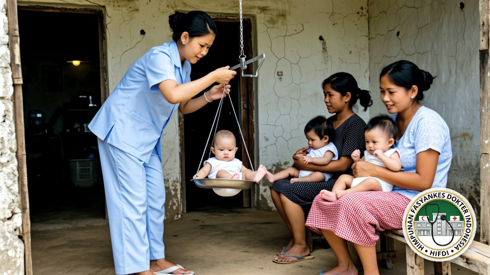

JAKARTA, 22 OKTOBER 2026. Himpunan Fasyankes Dokter Indonesia (HIFDI) menilai kondisi kesehatan masyarakat Indonesia masih menghadapi beban ganda. Penyakit yang semestinya sudah dikendalikan lewat imunisasi kembali muncul sebagai kejadian luar biasa, sementara tuberkulosis, masalah gizi, penyakit tidak menular, dan gangguan kesehatan jiwa tetap menjadi beban besar.
Pada ulang tahun keempatnya, HIFDI mengusulkan enam langkah yang berpusat pada fasilitas pelayanan kesehatan tingkat pertama (FKTP), yaitu klinik pratama, tempat praktik mandiri dokter (TPMD), puskesmas, dan laboratorium kesehatan. Enam langkah itu disusun dari data resmi dan dari apa yang dilihat pengurus saat berkunjung ke daerah, bukan dari daftar keinginan organisasi.
Penyakit yang seharusnya sudah dikendalikan kembali menular
Surat Edaran Direktur Jenderal Pencegahan dan Pengendalian Penyakit Kementerian Kesehatan Nomor HK.02.02/C/1602/2026 mencatat, sampai minggu ke-11 tahun 2026, terjadi 58 kejadian luar biasa (KLB) campak di 39 kabupaten/kota pada 14 provinsi. Kasus pada minggu pertama 2026 sebanyak 2.740, lalu menurun menjadi 177 kasus pada minggu ke-11. Kelompok usia 1 sampai 4 tahun menyumbang 43 persen kasus, dan 15 persen terjadi pada anak di bawah satu tahun.
Pemerintah sudah menjalankan Outbreak Response Immunization dan Catch-Up Campaign di 102 kabupaten/kota dengan sasaran anak usia 9 sampai 59 bulan. Bagi HIFDI, angka itu menunjukkan dua hal: cakupan imunisasi dasar belum pulih sepenuhnya, dan fasilitas layanan primer memikul tugas mengejar kekosongan imunisasi pada anak yang lahir atau tumbuh saat layanan kesehatan terganggu.
Tuberkulosis juga belum terkendali. Indonesia masih menempati posisi kedua dunia dalam beban TBC. Global TB Report 2024 mencatat sekitar 1.090.000 kasus dan 125.000 kematian setiap tahun, atau setara 14 kematian setiap jam. Sepanjang 2024, sekitar 885.000 kasus ditemukan dan dilaporkan, 135.000 di antaranya pada anak usia 0 sampai 14 tahun, sehingga masih ada sekitar seperlima kasus yang belum terjangkau penemuan kasus.
Gizi, penyakit tidak menular, dan kesehatan jiwa
Prevalensi stunting nasional masih 19,8 persen berdasarkan baseline Survei Status Gizi Indonesia 2024, sementara target 2026 adalah 17,5 persen. Pemerintah menetapkan penurunan bertahap menuju 14,2 persen pada 2029. Kementerian Kesehatan juga mencatat sekitar 11 persen bayi lahir dengan panjang badan di bawah 48 sentimeter, dan kenaikan prevalensi stunting paling tajam terjadi pada usia 12 sampai 24 bulan, saat anak mulai menerima makanan pendamping ASI.
Pada penyakit tidak menular, prevalensi obesitas penduduk usia 18 tahun ke atas naik dari 21,8 persen pada 2018 menjadi 23,4 persen pada 2023. Obesitas sentral naik dari 31 persen menjadi 36,8 persen pada periode yang sama. Sepanjang 2025, deteksi dini obesitas baru menjangkau 52.042.584 orang atau 42,4 persen dari sasaran nasional, dengan cakupan terendah di Papua Pegunungan sebesar 0,8 persen.
Untuk kesehatan jiwa, Survei Kesehatan Indonesia 2023 mencatat prevalensi depresi pada penduduk di atas 15 tahun sebesar 1,4 persen, atau sekitar 2,5 juta sampai 3 juta orang. Baru 12,7 persen dari jumlah itu yang mendapatkan pengobatan, dengan beban tertinggi pada kelompok usia 15 sampai 24 tahun. Pada triwulan III 2026, tercatat 2.365 warga masih mengalami pemasungan akibat gangguan jiwa berat.
Persoalan akses memperberat semuanya. Rasio dokter umum Indonesia baru 0,6 per 1.000 penduduk, sementara standar Organisasi Kesehatan Dunia (WHO) adalah 1 per 1.000 penduduk. Dari 10.300 puskesmas, sekitar 400 belum memiliki dokter. Kementerian Kesehatan memperkirakan pada 2032 Indonesia kekurangan sekitar 65.000 dokter spesialis, dan baru 65 persen puskesmas yang memiliki sembilan jenis tenaga kesehatan sesuai standar minimum.
Kalau pintu layanan primer kuat, wabah bisa dipotong lebih cepat, tuberkulosis bisa ditemukan lebih awal, dan orang dengan gangguan jiwa tidak perlu sampai dipasung.
Temuan dari kunjungan ke daerah
Sebagian persoalan di atas terlihat langsung saat Sekretaris Jenderal HIFDI, dr. Putro S. Muhammad, MH CIHL, mengunjungi fasilitas pelayanan kesehatan primer di sejumlah kabupaten dalam beberapa bulan terakhir. Tiga hal berulang ia temui.
Pertama, jadwal imunisasi di posyandu bergeser bukan karena vaksin tidak tersedia, tetapi karena petugas pelaksananya merangkap banyak pekerjaan lain. Kedua, pasien tuberkulosis berhenti berobat bukan karena menolak diobati, tetapi karena harus menempuh perjalanan jauh ke fasilitas yang menyediakan obat dan pemeriksaan dahak. Ketiga, di klinik pratama, cara mengukur berat dan panjang badan bayi belum seragam dengan puskesmas di kecamatan yang sama, sehingga gangguan pertumbuhan terlambat terlihat.

Ilustrasi digital HIFDI: penimbangan balita di posyandu, titik temu pertama program gizi dengan warga.
“Kalau saya turun ke daerah, keluhan yang paling sering saya dengar bukan soal kebijakan, tetapi soal waktu. Petugas posyandu merangkap beberapa pekerjaan sekaligus, pasien tuberkulosis harus menempuh perjalanan berjam-jam untuk mengambil obat, dan di klinik alat ukur pertumbuhan anak belum sama dengan puskesmas di kecamatan sebelah. Tiga hal kecil seperti itu yang membuat program besar berhenti di tengah jalan,” kata dr. Putro S. Muhammad.
Bagi HIFDI, tiga temuan itu menjelaskan mengapa perbaikan angka nasional berjalan lebih lambat dari yang diharapkan. Persoalannya bukan hanya ketersediaan obat dan alat, tetapi juga waktu dan tenaga petugas di garis depan.
Posisi HIFDI: enam langkah
- Kejar imunisasi sampai ke tingkat kelurahan. Semua fasilitas layanan primer perlu membuka layanan imunisasi kejar, bukan hanya menunggu program pemerintah. Fasilitas yang menemukan satu kasus campak wajib melaporkan dalam 24 jam dan menyiapkan ruang tunggu terpisah agar penularan di fasilitas kesehatan tidak terjadi.
- Skrining kontak serumah sebagai standar. Setiap pasien TBC yang diobati di klinik, tempat praktik dokter, atau puskesmas harus diikuti pemeriksaan terhadap seluruh anggota keluarga dan kontak erat. Tanpa itu, sumber penularan tetap ada di rumah dan pengobatan menjadi pekerjaan yang tidak pernah selesai.
- Satu pintu untuk gizi dan faktor risiko penyakit tidak menular. Pengukuran berat dan panjang badan balita perlu dilakukan dengan alat dan cara yang sama di semua fasilitas, dengan rujukan cepat untuk balita yang berhenti tumbuh. Pada kunjungan yang sama, tekanan darah, lingkar perut, dan gula darah orang tuanya juga diperiksa.
- Deteksi dini gangguan jiwa di layanan primer. Dokter di fasilitas primer perlu dibekali kemampuan skrining dan tata laksana awal, dengan rujukan berjenjang yang jelas. Praktik pemasungan harus diposisikan sebagai pelanggaran hak asasi manusia, bukan pilihan penanganan.
- Pemerataan tenaga kesehatan lewat kerja sama, bukan hanya penempatan. Pemerintah dapat menggandeng fasilitas kesehatan swasta untuk mengisi daerah tanpa dokter melalui skema penugasan, insentif, dan telekonsultasi dengan rumah sakit rujukan. Percepatan pendidikan dokter spesialis perlu dibarengi kepastian penempatan di daerah.
- Data yang rapi dan perlindungan tenaga kesehatan. Pelaporan ke sistem informasi kesehatan nasional, termasuk rekam medis elektronik, harus menjadi kebiasaan harian fasilitas kesehatan. Tenaga kesehatan juga perlu dilindungi lewat vaksinasi, alat pelindung diri yang memadai, dan pelaporan KLB yang cepat.
Penutup
HIFDI menyatakan siap menjadi mitra pemerintah daerah untuk mengerjakan bagian layanan primer, dan mengajak pemerintah kabupaten serta kota membuka ruang dialog dengan fasilitas kesehatan swasta di wilayahnya. Menurut HIFDI, banyak persoalan teknis di lapangan, mulai dari distribusi vaksin sampai kepastian obat tuberkulosis, lebih cepat selesai bila dibicarakan bersama.
HIFDI adalah organisasi yang mewadahi ekosistem fasilitas pelayanan kesehatan di Indonesia, meliputi klinik pratama, tempat praktik mandiri dokter, puskesmas, dan laboratorium kesehatan. HIFDI berbadan hukum berdasarkan Keputusan Menteri Hukum dan Hak Asasi Manusia RI Nomor AHU-0005242.AH.01.07.TAHUN 2023, dan pada 22 Oktober 2026 genap berusia empat tahun.
- Kementerian Kesehatan, Surat Edaran Dirjen Pencegahan dan Pengendalian Penyakit Nomor HK.02.02/C/1602/2026 tentang Kewaspadaan Campak: https://jdih.kemkes.go.id/storage/documents/pdfs/2026sedirjenpp1602.pdf
- Kementerian Kesehatan, Gerakan Indonesia Akhiri TBC (Global TB Report 2024): https://kemkes.go.id/id/indonesias-movement-to-end-tb
- Kementerian Kesehatan, 9 dari 10 orang dengan depresi belum terjangkau layanan kesehatan (9 Oktober 2026): https://kemkes.go.id/id/kemenkes-9-dari-10-orang-dengan-depresi-belum-terjangkau-layanan-kesehatan-
- InfoPublik, Target stunting 17,5 persen pada 2026 (18 Mei 2026): https://infopublik.id/kategori/nasional-sosial-budaya/970585/index.html
- Kementerian Kesehatan, Profil Kesehatan Indonesia 2025: https://setjen.kemkes.go.id/uploads/topics/profil-kesehatan-indonesia-2025-oudg5.pdf
- Kementerian Kesehatan, Perkuat layanan primer, penuhi dokter puskesmas dan tekan angka stunting (27 Juli 2026): https://kemkes.go.id/id/kemenkes-perkuat-layanan-primer-penuhi-dokter-puskesmas-dan-tekan-angka-stunting